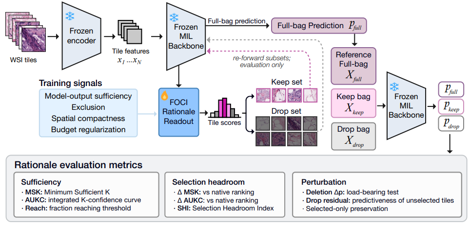
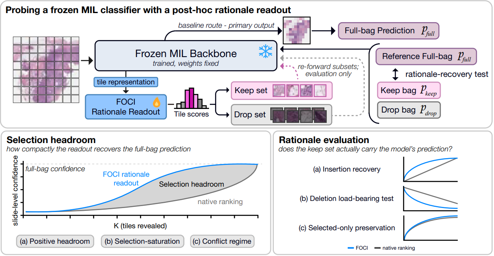
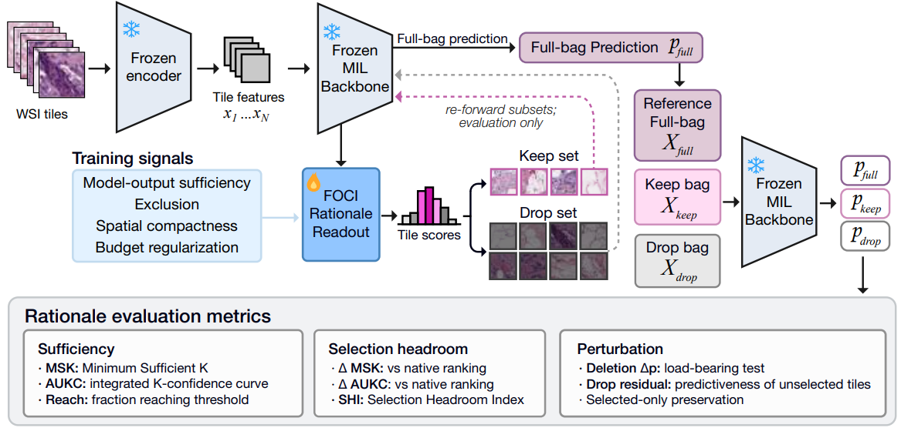
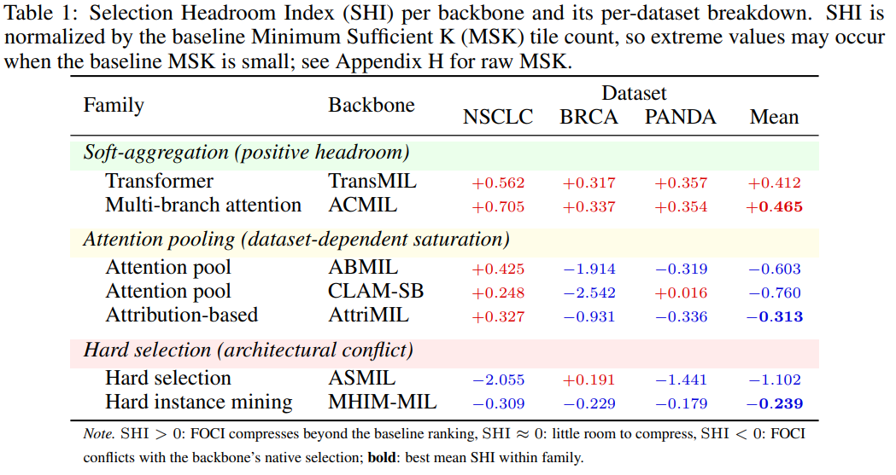
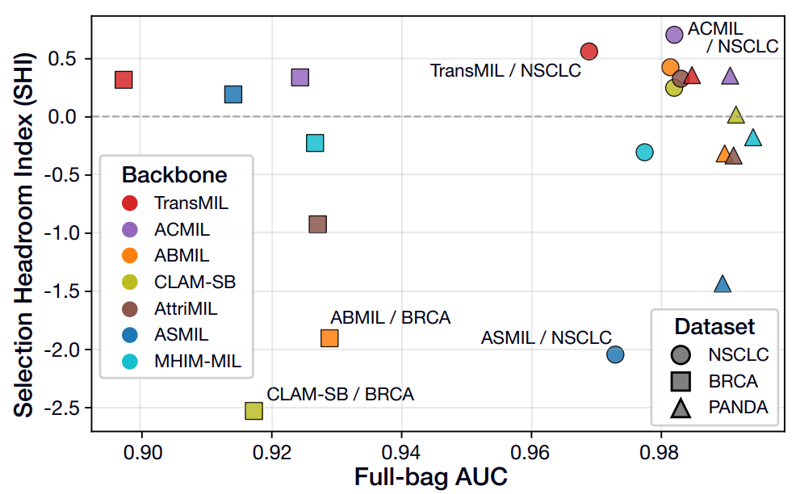

Thumnail. FOCI Architecture
💡
Summary: Link - arxiv
| Duration | 2026.02 - 2026.05 |
|---|---|
| Role | Co Author |
| Research Area | Computational Pathology · Explainable AI |
| Keywords | WSI · MIL · Interpretability · Foundation Model |
| Status | NeurIPS 2026 Submission |
🎯 What problem did we solve?
1. Background
Attention scores are widely used as explanations in Whole Slide Image (WSI) Multiple Instance Learning (MIL). However, high attention does not necessarily indicate that a small subset of image patches is sufficient to reproduce the model's prediction. Existing attention-based explanations therefore provide limited evidence for whether a prediction can truly be supported by a compact and faithful rationale.
❓ Research Questions
- Can a frozen WSI-MIL model recover its prediction from only a small subset of image patches?
- Does every MIL architecture inherently possess compact rationale representations?
- How can we quantitatively evaluate the "selection headroom" of different MIL models?
🎯 Objective
To develop a lightweight post-hoc rationale readout framework that identifies compact, output-consistent tile subsets from frozen WSI-MIL models and systematically measures how much explanation headroom exists across different MIL architectures.
🧠 How did we solve it?
2. Dataset
- TCGA-NSCLC
- TCGA-BRCA
- PANDA
Three public pathology benchmarks were used to evaluate rationale compactness across diverse tissue types and prediction tasks.
3. Method

Fig 1. Overall Framework
Proposed Framework
We proposed FOCI (Finding Optimal Contextual Instances), a lightweight rationale-readout module that operates on top of frozen MIL backbones without modifying their original inference pipeline. Instead of retraining the classifier, FOCI learns to identify compact tile subsets that preserve the original model prediction.
FOCI Architecture

Figure 2. FOCI Architecture
Key Components
- Frozen MIL Backbone
- FOCI Rationale Readout
- Keep/Drop Tile Selection
- Sequential Reveal Protocol (SRP)
- Selection Headroom Index (SHI)
Evaluation Strategy
Rather than evaluating only slide-level classification performance, the study introduced new rationale evaluation metrics:
- Minimum Sufficient K (MSK)
- Area Under K-Confidence Curve (AUKC)
- Reach
- Selection Headroom Index (SHI)
These metrics quantify how efficiently a model's prediction can be reconstructed from progressively revealed image tiles.
📊 What were the results?
4. Results
- Finding 1: Compact rationale availability is highly architecture-dependent, rather than being an inherent property of all MIL models.
- Finding 2: Transformer-based and multi-branch attention models (e.g., TransMIL, ACMIL) exhibited positive selection headroom, indicating that their predictions could be recovered from substantially smaller tile subsets.
- Finding 3: Attention pooling methods often entered a selection saturation regime, leaving little room for further rationale compression despite strong classification performance. ‘
- Finding 4: High slide-level AUC did not necessarily imply compact or faithful rationales, demonstrating that prediction accuracy and explanation quality should be evaluated independently.

Table 1. Main Performance

Figure 3. Main performance
5. Discussion & Limitation
Discussion
- Introduced the concept of Selection Headroom as a new perspective for evaluating explainability.
- Demonstrated that explanation quality depends on model architecture, even when predictive performance is similar.
- Proposed an architecture-agnostic auditing framework applicable to existing frozen MIL models.
Limitation
- Evaluated only model-output sufficiency rather than clinical correctness.
- Focused on binary pathology classification tasks.
- Additional validation with larger clinical datasets and human reader studies is needed.
👩💻 What was my contribution?
Co-Author
- Literature review on WSI-MIL and explainable AI
- Experimental implementation and validation
- Performance analysis across multiple MIL backbones
- Figure and result visualization
- Manuscript editing and discussion refinement
💡 What did I learn?
Technical Insight
이 연구에 공저자로 참여하면서, “해석가능성”에 대한 이해도가 확장되었습니다. 설명의 quality는 분류 성능과는 독립적으로 평가되어야 하고, 새로운 평가 프로토콜을 통해 기존 지표를 넘어 모델이 동작하는데 있어 숨겨진 component들을 밝혀낼 수 있다는 것을 알게 되었습니다.
This project broadened my understanding of post-hoc interpretability in computational pathology. I learned that explanation quality should be evaluated independently from classification performance and that new evaluation protocols can reveal hidden properties of model behavior beyond conventional metrics.
Research Insight
공저자로 연구에 참여하면서 협업 연구를 다른 관점에서 경험할 수 있었습니다. 개별적인 기술적 기여가 어떻게 더 범위가 큰 프로젝트에 통합되는지, 그리고 엄격한 실험 설계, 심사위원 중심의 평가, 명확한 과학적 스토리틸렝이 영향력 있는 AI 연구 논문 게재를 위해 얼마나 중요한지 체감할 수 있었습니다.
Participating as a co-author allowed me to experience collaborative research from a different perspective. I learned how individual technical contributions integrate into a larger research project and how rigorous experimental design, reviewer-oriented evaluation, and clear scientific storytelling are essential for publishing high-impact AI research.